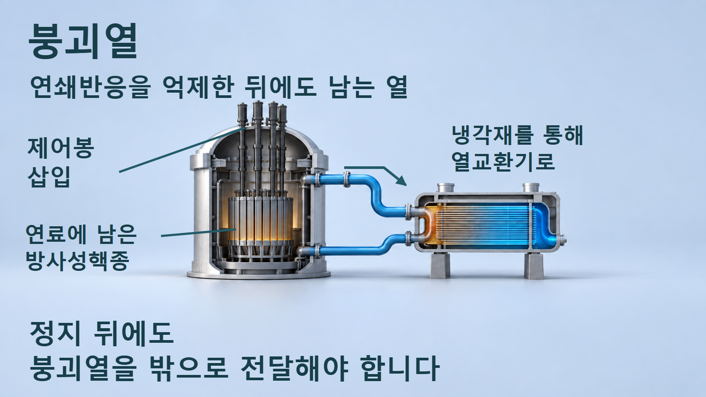
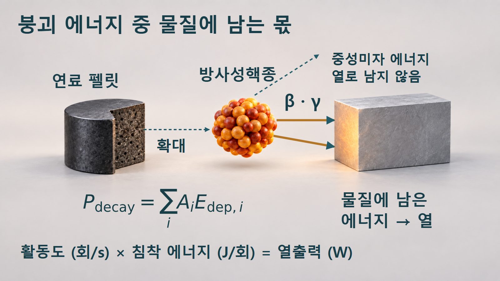
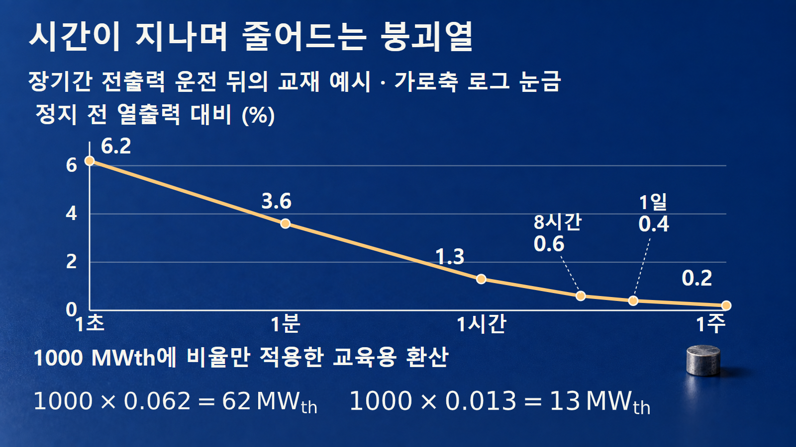
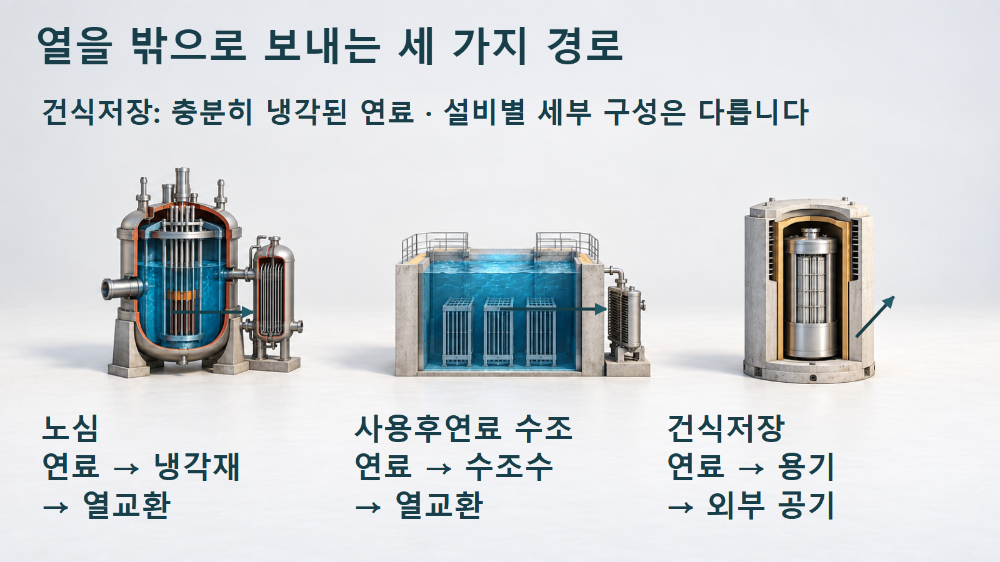

방사성붕괴와 시간 · 060
붕괴열
방사성붕괴로 남는 에너지와 정지 뒤의 열 전달
연쇄반응을 억제해도 이미 생성된 방사성핵종은 계속 붕괴합니다. 에너지가 열이 되는 과정, 교재 비율의 두 환산 예시, 노심·수조·건식저장의 전달 경로를 연결합니다.

연쇄반응과 붕괴는 다른 시간에 응답합니다
붕괴열은 방사성핵종이 붕괴하면서 방출한 에너지 중 물질에 남아 열이 되는 부분입니다. 원자로에서 제어봉 등으로 연쇄반응을 억제하면 핵분열에 의한 출력은 빠르게 줄어들지만, 이미 만들어진 핵분열생성물 등의 붕괴까지 동시에 멈추지는 않습니다. 따라서 정지 뒤에도 연료에서 생기는 열을 밖으로 전달해야 합니다. [1]
운전 중에는 다양한 반감기를 가진 핵종이 생성되고 붕괴합니다. 정지 후 짧은 반감기의 성분이 먼저 빠르게 줄고, 더 긴 시간에는 상대적으로 오래 남는 성분의 기여가 중요해집니다. 붕괴열을 “모든 원자로에서 정지하자마자 일정한 비율이 된다”는 단일 상수로 이해하지 않습니다. [1]
연료와 구조물에 이미 저장되어 있던 열이 빠져나오는 현상도 정지 뒤 열적 거동에 영향을 줍니다. 여기서 말하는 붕괴열은 방사성붕괴로 새로 발생하는 열의 원천을 가리킵니다. 뜨거운 물체가 식는 과정 전체와 발생원으로서의 붕괴열을 구분하면 냉각의 목적을 더 정확하게 이해할 수 있습니다.
붕괴 횟수에 침착 에너지를 곱합니다
핵종 i의 활동도를 Ai, 한 번의 붕괴당 대상 물질에 남는 평균 에너지를 Edep,i라고 하면, 붕괴열 출력은 각 핵종의 AiEdep,i를 더해 나타낼 수 있습니다. 활동도가 회/s이고 에너지가 J/회이면 곱의 단위는 J/s, 즉 W입니다. 실제 평가에서는 핵종별 재고와 붕괴 경로, 에너지 침착을 함께 다룹니다. [1] [2]
붕괴열을 계산할 때에는 방출 에너지 전체가 아니라 대상 물질에 실제로 남는 에너지를 사용해야 합니다.

베타 입자나 감마선의 에너지는 물질과 상호작용해 열에 기여합니다. 중성미자가 가져가는 에너지는 보통 계 밖으로 빠져나가 열로 회수되지 않으므로 침착 에너지에 포함하지 않습니다. 방출 에너지 전체를 무조건 곱하면 열출력을 과대평가할 수 있습니다. [2]
독립된 단일 핵종이라면 활동도는 지수적으로 줄지만, 붕괴사슬에서는 부모의 붕괴가 딸핵종을 공급합니다. 그러므로 실제 핵종 집합의 활동도를 모두 서로 독립된 하나의 지수감소로 가정할 수는 없습니다. 합계식은 각 성분의 실제 활동도를 합친다는 뜻이지, 모든 성분의 생성 이력을 생략해도 된다는 뜻은 아닙니다.
작은 비율도 큰 열출력이 됩니다
다음 수치는 장기간 전출력으로 운전한 뒤 정지하는 조건을 설명한 교재의 예시 비율입니다. 원문 표6.3은 3000 MWth 원자로를 기준으로 제시되어 있습니다. 여기서는 그 표의 반올림된 백분율 열만 가져와, 정지 전 열출력 1000 MWth에 적용하는 교육용 환산을 별도로 수행합니다. 원문의 MW 열을 그대로 옮긴 값이 아닙니다. [1]
예시 1 — 정지 1초 뒤의 6.2%를 환산합니다. 1000 MWth×0.062=62 MWth입니다. 정지 전 출력에 비하면 크게 줄었지만, 열을 지속해서 전달해야 한다는 점은 변하지 않습니다. 이 6.2%는 특정 교재 조건의 1초 지점이며 보편적인 정지 순간값으로 쓰지 않습니다.
예시 2 — 같은 조건에서 1시간 뒤의 비율을 환산합니다. 1.3%=0.013이므로 1000 MWth×0.013=13 MWth입니다. 이는 1초 예시의 62 MWth보다 작지만 0은 아닙니다. 시간에 따른 감소와 냉각 필요성은 서로 모순되지 않습니다.
같은 환산 조건에서 1시간 뒤의 1.3%도 13 MWth에 해당합니다.

| 정지 뒤 시간 | 교재 예시 비율 | 1000 MWth 환산 |
|---|---|---|
| 1초 | 6.2% | 62 MWth |
| 1분 | 3.6% | 36 MWth |
| 1시간 | 1.3% | 13 MWth |
| 8시간 | 0.6% | 6 MWth |
| 1일 | 0.4% | 4 MWth |
| 1주 | 0.2% | 2 MWth |
가로축은 시간의 로그 눈금이어서 1초부터 1주까지를 한 그림에 표시합니다. 점 사이의 선은 표의 지점을 읽기 위한 연결선이며 임의 시간의 정확한 값을 계산하는 보간식이나 설계식이 아닙니다. 백분율 원자료가 반올림되어 있으므로 환산값의 표시 자릿수를 정밀 예측으로 읽지 않습니다. [1]
발생한 열이 빠져나가는 길
열출력은 발생 속도이며 온도는 물질의 열적 상태입니다. 같은 붕괴열이라도 열을 전달하는 물질과 접촉 면적, 유동과 온도차에 따라 온도 변화가 달라집니다. 열 발생원만 계산하지 않고 어디를 거쳐 최종적으로 주변으로 전달되는지도 보아야 합니다.
노심, 사용후연료 수조, 건식저장은 모두 열을 밖으로 보내야 하지만 사용하는 전달 경로는 다릅니다.

노심에서는 연료에서 냉각재로, 다시 열교환 계통으로 열이 전달됩니다. 사용후연료 수조에서는 연료의 열이 수조수로 옮겨지고 수조의 열제거 계통이 이를 전달합니다. 그림의 화살표는 열의 경로를 나타내는 개념 표시이며 실제 밸브·펌프 구성이나 운전 순서를 나타내지 않습니다. [1]
건식저장은 충분히 냉각된 연료를 다루며, 연료와 용기 내부에서 전도·복사·대류가 열 전달에 관여합니다. 이후 용기와 주변 공기 등의 경로로 열이 빠져나갑니다. 설계에 따라 자연대류와 복사 등을 이용하는 수동적인 열제거가 가능하지만, 구체적인 전달 경로와 조건은 저장계통별로 다릅니다. [3]
“수동”은 열이 발생하지 않는다는 뜻이 아닙니다. 열이 흐를 수 있는 재료·공간·온도차가 존재하며 그 물리적 경로가 작동한다는 뜻입니다. 세 장면은 서로 배관으로 연결된 한 설비가 아니라 각자 열을 전달하는 별도의 계통입니다.
예시 곡선을 설비 예측으로 바꾸지 않습니다
실제 붕괴열은 정지 전 출력 이력, 조사기간, 연료의 조성과 핵종 재고, 정지 뒤 경과시간에 따라 달라집니다. 오래 운전한 연료와 짧게 조사한 연료의 재고가 같지 않으므로, 교재의 비율을 모든 원자로와 모든 연료에 그대로 적용하지 않습니다. [1]
이 글에서 계산한 62 MWth와 13 MWth는 같은 예시 비율을 같은 기준 열출력에 곱한 결과입니다. 발전기의 전기출력과 비교해 효율을 거꾸로 가정하거나, 이 숫자만으로 특정 설비의 냉각능력·온도·허용시간을 정하지 않습니다. MWth는 열출력이며 MWe는 전기출력입니다.
방사능과 붕괴열도 같은 물리량이 아닙니다. 활동도는 초당 붕괴 횟수이고 붕괴열은 침착 에너지를 포함한 에너지 전달률입니다. 같은 Bq라도 한 번의 붕괴에서 남기는 에너지가 다르면 열출력이 달라집니다. 선량 역시 별도의 노출 조건을 필요로 하므로 붕괴열 곡선만으로 대신 평가할 수 없습니다.
발생·감소·전달을 함께 봅니다
| 구분 | 질문 | 필요한 정보 |
|---|---|---|
| 열 발생 | 어떤 핵종이 에너지를 남깁니까? | 활동도·침착 에너지 |
| 시간 변화 | 어떤 성분이 줄고 공급됩니까? | 재고·반감기·붕괴사슬 |
| 열 전달 | 어디를 거쳐 밖으로 갑니까? | 연료·냉각재·용기·주변 |
| 설비 평가 | 이 조건에 맞는 예측입니까? | 운전 이력·구성·해석 조건 |
원자로 정지와 붕괴열 소멸은 동시에 일어나지 않습니다. 발생한 핵종이 계속 붕괴하기 때문입니다. 시간이 지나며 열출력이 줄어드는 과정과 그 열을 외부로 전달하는 경로를 함께 이해해야 노심·수조·건식저장에 공통으로 필요한 열관리를 설명할 수 있습니다.